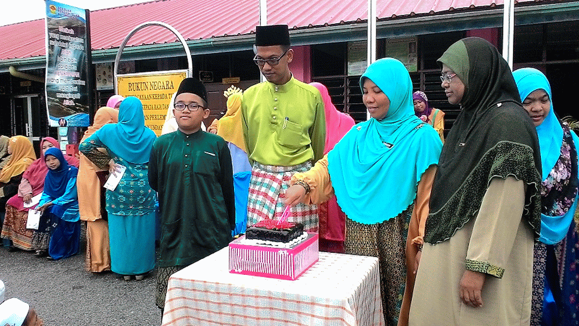
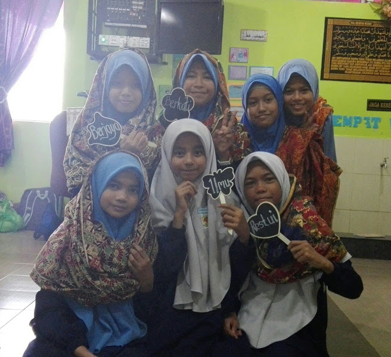
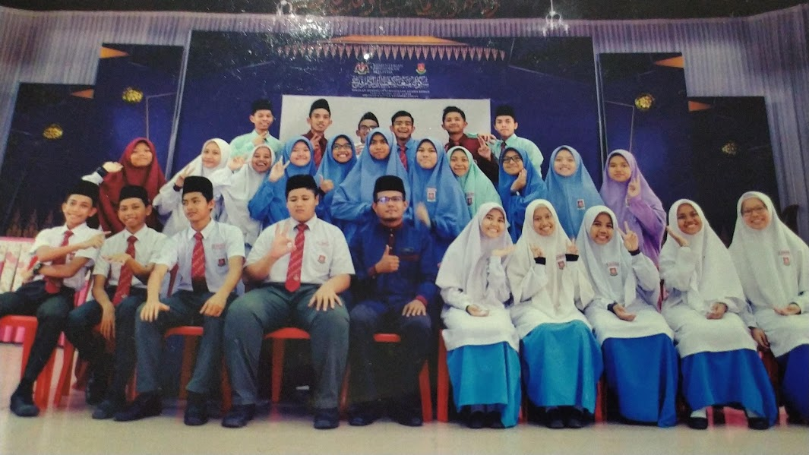
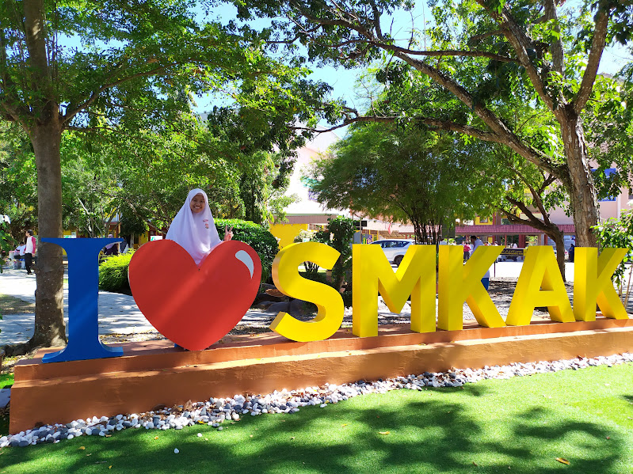
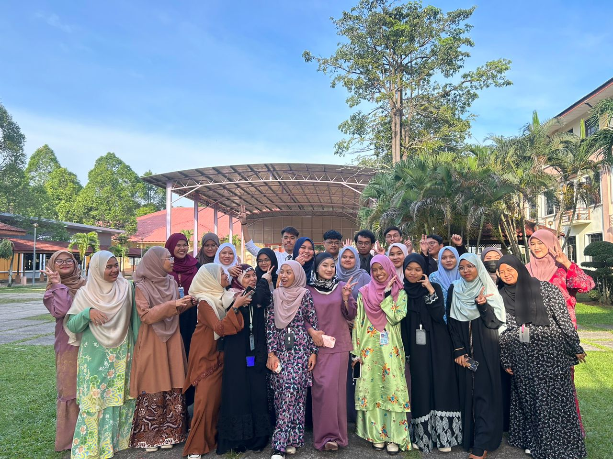
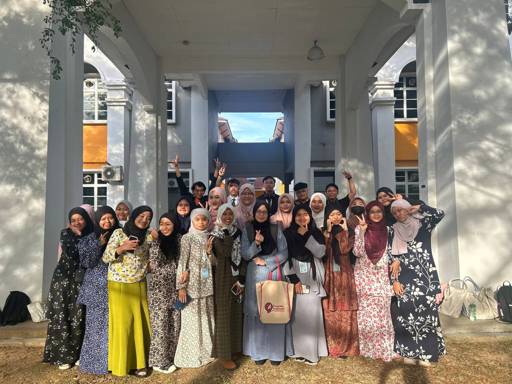

My Education
Primary School
 When I was 7 years old, I enrolled in Sekolah Rendah Islam Al-Ihsaniah. I received many knowledge there thanks to the guidance of the kind teachers there. I could not become who I am today without them.
Secondary School
 For secondary school, I studied in Sekolah Menengah Kebangsaan Agama Kedah. There, I became a hafizah and made many priceless memories with my friends there.
University
 After receiving my SPM result, which only had 6A, I managed to enter Universiti Teknologi MARA Cawangan Kedah, which only takes me 30 minutes to get there from my house. I am currently 4 semesters in before finishing my diploma. I learned a lot there about how the library system works and learned many valuable skills., such as HTML.